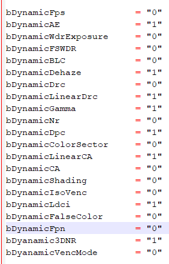
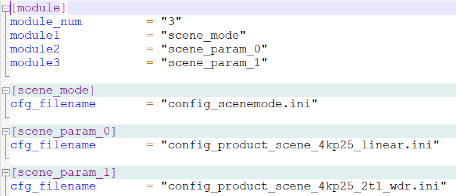
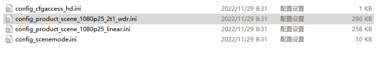
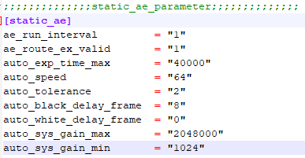
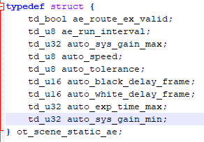
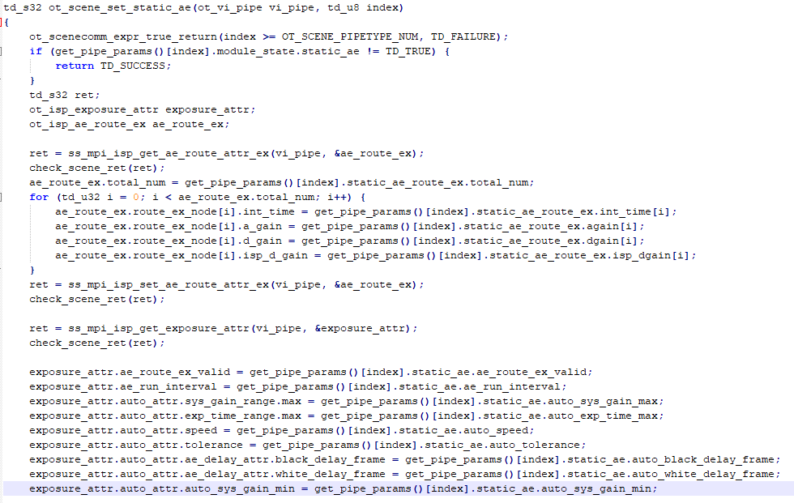

前言
前言
自适应模块可以根据当前环境光线的明暗变化以及用户设置的码率来调节相关图像及编码参数，以优化图像显示效果。
与本文档相对应的产品版本如下。
本文档（本指南）主要适用于以下工程师：
- 技术支持工程师
- 软件开发工程师
修订记录累积了每次文档更新的说明。最新版本的文档包含以前所有文档版本的更新内容。
概述
摄像机在拍摄视频时会面对外界场景的变化。对于不同的场景，芯片内部的ISP模块会相应地使用不同的参数，以达到采集得到的图像效果对于当前场景最优。
自适应Sample总体介绍
模块介绍
之前的自适应sample面临着，当适配多款sensor时，由于要调节的参数类型和参数值不同，所以每个sensor都需要维护一套自适应代码，这样代码量较多，同时一款sensor上面添加的参数如果要配置到其他sensor，也要改其他的自适应代码，维护起来较为困难。
Hi35xxVxxx当前不同Sensor的参数赋值代码统一共用一套。主要通过模块的开关来保证不同Sensor的不同模式来配置ISP相关参数。如图1所示，其中0表示当前模块关闭，该参数不会配置到对应模块的接口中，反之为1时，表示当前模块开启。


模块框架图

自适应Sample模块介绍
自适应模块按功能可以分解为如下子模块：
自适应参数导入

自适应调试参数是由PQ离线标定获取到的，在自适应模块运行过程当中，应确保自适应调试参数已经全部齐备。
PQ离线标定参数的存储方式可以分为两种，写在ini配置文件或写在源码当中。当参数写在ini配置文件中时，可以通过ini解析工具得到相应的参数，用此方式，在参数调试过程中，修改参数无需编译源码。而将参数写在源码中时，获取参数无需解析，但是缺点则是，调试时修改参数，需要重新编译代码。
说明：
- 自适应调试参数中还有一种类型是由厂测时产线标定获取到的，如Mesh-Shading的table以及静态坏点的table。
- 这种调试参数的存储方式只能是写在ini配置文件中，因为通过此方式，无需重新编译源码。
自适应主框架
自适应主框架是自适应模块对产品提供功能函数接口的子模块，包括自适应模块的初始化、去初始化，以及根据当前的媒体通路刷新自适应参数并启动自适应参数调节功能等。
该模块可以适用于多种产品形态，包括但不限于_录像机_、运动相机，对于不同的产品形态提供上述提到的基础功能。

Component为预留部分，待后续补充自适应新增规格。
自适应调节模块
自适应参数可以按照静态和动态分成两个大类，静态参数是在参数生效过程中只需要配置一次，而动态参数配置则是随着当前场景的变化而变化，每个大类又根据ISP模块分成各个子类。
对于不同的产品形态，或者对于相同产品形态不同的sensor，需要调试的自适应参数root是有可能不同的。因此将自适应调试参数赋值单独剥离成一个模块，这样对于自适应整个大模块来说，面对参数调试多样性的需求，只有该子模块是变化的，降低代码维护复杂度。

文件组织
自适应模块的文件组织结构如图1所示，主要分为ini解析组件configaccess和iniparser工具，其中iniparser工具当前位于source/common/include目录下，configaccess位于source/mpp/sample/common/目录下，各sensor不同的param、source和lib，以及整个模块的公共代码。
- Tools内部基于iniparser封装的configaccess工具，用作ini文件的解析；
- Src内部主要有core（自适应框架代码）和 sample:（自适应sample的支撑代码）；
- Include内部主要是自适应sample和自适应框架代码所需头文件。
- param目录主要是放置N个Sensor参数ini文件。

重要概念
下面以双pipe抓拍（当处于8M抓拍，前端sensor时序为4K30）为例，介绍本模块如何调节图像参数，并讲解一些API数据类型中的概念，方便用户配置。
单sensor预览抓拍通路，如Figure1所示。

如图1所示当前媒体通路中两个pipe的数据来源于同一个sensor，且pipe0中的ISP可以控制sensor，因此pipe0和pipe1的main_pipe_hdl都为0。
- main_pipe_hdl指可以控制sensor的ISP所在的pipe数量和sensor的数量一致。当两个pipe的数据来源于同一个sensor，它们的main_pipe_hdl相同。
- 单sensor预览抓拍通路中，需要调节图像质量，则需要配置位于pipe通路上的ISP、位于vpss上的3DNR、位于VENC上的编码属性。
-
pipe通路指以vcap pipe为起点，包括和其绑定的vpss以及后续的venc、vo。所以图1中有两条pipe通路。
场景自适应模块将当前的媒体通路分解为一条或多条pipe通路，每条pipe通路配置一组自适应参数，每一组自适应参数由一个图像参数调节文件维护，请参考" 数据类型"。当前pipe通路需要配置的自适应参数由pipe_param_index来指定。pipe_param_index具体含义请参考ot_scene_pipe_attr。
开发指引
使用流程
使用概述
自适应模块相关API和参数说明可参考本文档下述部分。具体实现可参考自适应的SDK sample, 自适应使用流程如图1所示。

运行对应Sensorini文件
在SDK sample中，不同的sensor分属于不同的文件夹且各自独立，每一个sensor维护自己的参数。
运行过程如下：
- 在Sceneauto的目录下，执行Makefile生成对应sample_scene。
- 执行sample_scene以加载param目录下对应的sensor的ini文件。
- Sceneauto目录下的param文件中的参数配置说明参考本开发参考的后续章节。
- Src/core目录下的source文件中的源码用于自适应参数的赋值。
获取和导入自适应和媒体通路参数
启动场景自适应功能所需要的参数分为两部分，自适应调试参数和媒体通路参数。在Sensor的文件中，自适应调试参数的ini文件一般有多个，如启动自适应，媒体通路上每一个正在运行中的pipe都应当赋值一组自适应调试参数，各pipe上赋值的参数可以相同也可以不同。
在sample中，自适应调试参数和媒体通路参数都被存储在ini配置文件中，首先需要在运行过程中解析ini文件将参数写入到特定内存中的结构体，再导入到自适应模块当中。
获取和导入模块所需参数的过程如下：
- Configaccess工具解析对应sensor路径下的config_cfgaccess_hd.ini。
- Configaccess工具分别解析自适应调试参数和媒体通路参数，并将这两类参数分别存储在一个数组当中。
- Sample调用自适应接口将自适应调试参数数组导入自适应模块中，并选取一种和当前媒体通路匹配的参数配置到模块中。

- 媒体通路参数在后续的数据结构详解中有详细说明，媒体通路参数主要是当前媒体通路的使能关系，指示各个使能的媒体pipe上该配置哪一套自适应调试参数。
- 自适应调试参数的集合是一个数组，媒体通路参数中各pipe上要配置的自适应调试参数为该数组的下标，需提前指定。
- 各个自适应调试参数在数组中的位置在config_cfgaccess_hd.ini中指定。
启动场景自适应
场景自适应的启动主要分成两个步骤。配置各pipe上的静态参数，静态参数表示该参数只需要配置一次。之后再配置各pipe上的动态参数，动态参数表示该参数会随着当前的场景变化而变化。
当前版本动态参数跟随场景的变化而变化，主要取决于当前场景下的曝光量、ISO或者曝光比。
启动场景自适应的过程如下：
- 调用自适应相应的接口，配置媒体通路参数，调用ot_scene_set_scene_mode ()。
- 自适应启动，并跟随当前场景动态调试某些参数。
切换自适应配置
在场景自适应的过程中，会伴随着媒体通路变化这样的典型行为。当媒体通路发生变化时，如线性模式切换到WDR模式，运动DV多个分辨率之间的切换等，各个通路pipe上的要配置的自适应参数一般也会需要相应的发生变化，此时需要切换自适应的配置。
切换自适应配置的过程如下：
- 首先将自适应Pause，调用ot_scene_pause (TD_TRUE)。
- 再切换媒体通路。
- 获取当前媒体通路下自适应模块针对此通路的配置参数。
- 启动自适应，调用ot_scene_set_scene_mode ()。
- 将自适应Resume，调用ot_scene_pause (TD_FALSE)。
- 当媒体通路关闭时，需要调用自适应接口ot_scene_pause(TD_TRUE), 来防止调用ISP接口。
- 当媒体通路开启时，需要调用自适应接口ot_scene_pause(TD_FALSE)，来使能调用ISP接口。
Ini解析工具介绍
当前自适应sample中，解析ini参数主要依赖于ini文件解析库iniparser，以及在此基础上封装的cfgaccess工具。
Iniparser主要功能就是将ini配置文件中的字符串解析成bool值、int值、long值等特定的数据类型，而cfgaccess工具是在此基础上做了一层封装，可以通过一个主ini配置文件对其余ini配置文件做到很好的管理，在自适应sample中，该主ini配置文件为各sensor下param文件中config_cfgaccess_hd.ini，如图1所示。

config_scenemode所对应的媒体参数配置ini文件只有一个，多种媒体参数配置放在该文件中。而scene_param_n所对应的自适应配置参数有多个，每个ini配置文件对应一组参数。
通过该文件，ini解析工具可以一次解析多个ini配置文件，并且将ini配置文件生成的参数有序的存储。
同时通过cfgaccess工具，可以方便快捷的知道ini配置文件中是否有对应的项，具体的使用请参考sample代码。
自适应配置参数介绍
自适应配置参数包括动态和静态两大类，其中各大类还可以按模块细分成子类。典型的如静态AE、动态3DNR以及动态AE等，动态AE每种类型的ini配置如图1所示。

其中ae_exposure_cnt代表数组的大小，而后面的exp_ltoh_thresh以及exp_htol_thresh则表示曝光量的数组，auto_compensation以及auto_max_hist_offset分别和ISP中配置曝光量中的某项参数对应。
通过dynamic_ae这样的模块命名，可以知道这个模块是配置与AE相关的动态参数，同时通过exp_thresh可以知道动态配置AE参数是由当前环境的曝光量变化决定的，同时动态AE调整的值为compensation和max_hist_offset对应的ISP参数。
- 一个自适应配置ini文件可以通过参数解析填充到自适应参数数组中，每个pipe中可以配置自适应参数数组中的一项。
- Sample里一个sensor的自适应配置ini文件的数量有上限，注意不要超过上限导致数组越界
媒体通路配置参数介绍
媒体通路配置参数，需要作为一个入参传入到自适应框架代码的接口中，启动自适应。图1是一组媒体通路配置参数的典型赋值。
从通路配置参数中，可以知道当前的模式是线性还是WDR，所有pipe是开还是关，以及该pipe上应该配置哪一组自适应参数，通过pipe_param_index来指定。
- ini配置中的pipe_param_index是指自适应配置参数数组的下标。
- 自适应配置参数数组的排列是在如图1中的hd文件中指定，scene_mode_0对应数组下标0，scene_mode_1对应数组下标1，依次排列。
多组媒体通路配置存在于同一个ini配置文件中，在调用自适应函数接口时，只需要使用其中一种配置，在自适应过程中，可以动态切换配置。

增加sensor，如何跑Sample
自适应模块可以兼容多种sensor，sample提供了几种典型sensor。当用户需要添加一款sensor的时候，需要做如下的适配。
适配Sensor的过程如下：
- 在sample主目录的param下新建一个文件夹，命名为sensor_xxx。
-
在sensor_xxx放置该sensor中要调节的参数。
可以将其他sensor的参数文件夹下的文件拷贝至该文件下，增删其中的参数类型。
-
修改参数文件夹中的config_cfgaccess_hd.ini中各个path的路径名。
-
修改参数文件下各ini的参数。
首先增加该sensor自适应配置参数，如图1所示中的config_product_scene_1080p25_2t1_wdr，建议按照分辨率帧率、线性WDR等来区分命名，其中的参数增删可参考"增删参数，如何跑Sample"章节。

再根据sensor会使用的媒体通路的配置来修改config_scenemode里的内容。
最后修改config_cfgaccess_hd.ini中的内容。
-
在主目录下make clean; make，生成自适应sample的可执行文件。
增删参数，如何跑Sample
在PQ调试过程当中，需要经常修改参数和增删参数，最后达到一个图像效果的最优。本小结，主要描述当增删参数时，自适应模块应该如何去做一个适配。
下面的工作流程是讲解ini配置项中需要增加参数，该如何去做。
增加参数的过程如下：
- 首先明确对应sensor该增加的参数是什么，对应的ISP的接口数据类型是哪一个。
-
在该sensor的param文件下的自适应配置参数ini文件中加上这个参数项，给出自己的命名。如static_ae中增加一个系统增益的最小值，增加前和增加后的对比如图1所示。

在ini配置文件中的auto_sys_gain_min即对应于SDK接口中ot_isp_exposure_attr(详见《ISP 开发参考》)里的auto_attr.sys_gain_range.min，使用者需要清晰了解这种映射关系。
同时该sensor下所有的自适应配置ini文件中都需要加个这个参数项。
-
在sample主目录下include文件下的ot_scene_setparam.h中的数据结构体ot_scene_static_ae中，增加一个参数，就是ini配置文件中auto_sys_gain_min所对应的参数。该参数命名由用户指定如图2所示。

-
在该src/core文件下的ot_scene_setparam.c中，增加该参数赋参语句如下图3所示。

-
在自适应主目录下的scene_loadparam.c中的scene_load_static_ae函数体内，增加如图4所示语句。
-
当需要减少调试参数，则只需要增加sensor的反方向操作，但是scene_loadparam.c中的代码无需修改，因为这是一份所有sensor共享的公共代码，可以做增量，不影响其他sensor的代码，但是如果做减量，就会影响其余sensor的代码实现。


典型通路配置方案
图像质量自适应调节的时候需要调用ot_scene_set_scene_mode。不同的媒体通路类型，该接口的入参不同。没有特别说明，则ISP模式为线性。下面以媒体业务的典型的四种媒体通路来依次介绍上述接口入参ot_scene_mode如何配置。
单sensor预览录像
现假定该pipe为pipe0，且此时工作模式为4K30录像。媒体通路中使能了一个pipe。同时该pipe中的ISP也是控制sensor的ISP。因此main_pipe_hdl数量为1，且和使能的vcap_pipe_hdl句柄一致。
单sensor预览录像通路，如Figure1所示。

当媒体通路如图1所示ot_scene_mode的参数应配置，如表1所示。
表 1 通路一ot_scene_mode参数配置表
其余值按通路实际状态配置。
单sensor预览抓拍
现假定预览通路pipe为pipe0，抓拍通路pipe为pipe1。且此时工作模式为8M抓拍。媒体通路中使能了两个pipe。同时两个pipe的数据都来源于一个sensor，sensor数量为1，因此main_pipe_hdl的个数为1。且控制sensor的isp所在的pipe在预览通路。
当媒体通路如图1所示，ot_scene_mode的参数应配置，如表1所示。

表 1 通路二ot_scene_mode 参数配置表
其余值按通路实际状态配置。
多sensor预览录像
现假定预览通路pipe为pipe0和pipe1。且此时工作模式为4K30前后路预览录像。媒体通路中使能了两个pipe。同时两个pipe的数据都来源于两个sensor，sensor数量为2，因此main_pipe_hdl的个数为2。且控制sensor的isp所在的pipe在预览通路。
多sensor预览录像通路，如Figure1所示。

当媒体通路如Figure1所示，ot_scene_mode的参数应配置，如表1所示。
表 1 通路三ot_scene_mode参数配置表
其余值按通路实际状态配置。
单sensor WDR预览录像
WDR 2to1模式需要使能两个pipe，但是只使能一个ISP。因此对应场景自适应模式来说，当前的pipe通路只有一个。
现假定该pipe为pipe0，且此时工作模式为4K30录像。
媒体通路中使能了两个pipe。同时两个pipe的数据都来源于一个sensor，因此main_pipe_hdl的个数为1。且控制sensor的isp所在的pipe为Vcap pipe0。
单sensor WDR2to1预览录像通路，如Figure1所示。

当媒体通路如Figure1所示，ot_scene_mode的参数应配置，如表1所示。
表 1 通路四ot_scene_mode参数配置表
API参考
SCENE提供以下API：
- ot_scene_init：初始化SCENE模块。
- ot_scene_set_scene_mode：配置自适应媒体参数，开启自适应。
- ot_scene_pause：暂停或恢复自适应。
- ot_scene_get_scene_mode：获取当前的自适应媒体参数。
- ot_scene_deinit：去初始化SCENE模块。
- ot_scene_set_scene_fps：动态设置自适应帧率控制。
- ot_scene_get_scene_fps：获取动态自适应帧率控制。
-
ot_scene_set_scene_init_exp：设置自适应初始化iso值与exp值。
ot_scene_init
【描述】
初始化SCENE模块，导入自适应配置参数。
【语法】
【参数】
【返回值】
参见错误码。 |
【需求】
- 头文件：ot_scene.h, ot_scene_autogenerate.h
- 库文件：Null
【注意】
- scene_param不能为空。
- 最大支持10种自适应参数配置。
【举例】
参考scene_sample.c。
ot_scene_set_scene_mode
【描述】
配置自适应媒体参数，开启自适应。
【语法】
【参数】
【返回值】
参见错误码。 |
【需求】
- 头文件：ot_scene.h
- 库文件：Null
【注意】
- scene_mode不能为空。
- 不支持多线程调用。
- 必须在自适应模块初始化之后调用。
- 自适应媒体参数中的使能关系必须和当前媒体通路一致。
【举例】
参考scene_sample.c。
ot_scene_pause
【描述】
暂停或者恢复自适应。
【语法】
【参数】
|
【返回值】
参见错误码。 |
【需求】
- 头文件：ot_scene.h
- 库文件：Null
【注意】
- 在外部媒体通路销毁之前，必须先暂停自适应。因为自适应会不停配置ISP属性，如果ISP因为通路销毁而stop，那么自适应配置ISP就会报错。
- 在外部媒体通路使能之后，启动自适应的时候，需要恢复自适应。
- 必须在自适应模块初始化之后调用。
【举例】
参考scene_sample.c。
ot_scene_get_scene_mode
【描述】
获取当前的自适应模式。
【语法】
【参数】
【返回值】
参见错误码。 |
【需求】
- 头文件：ot_scene.h
- 库文件：Null
【注意】
必须在自适应模块初始化之后调用。
【举例】
参考scene_sample.c。
ot_scene_deinit
【描述】
去初始化SCENE模块。
【语法】
【参数】
无。
【返回值】
参见错误码。 |
【需求】
- 头文件：ot_scene.h
- 库文件：Null
【注意】
必须在自适应模块初始化之后调用。
【举例】
参考scene_sample.c。
ot_scene_set_scene_fps
【描述】
动态设置自适应帧率控制。
【语法】
【参数】
【返回值】
参见错误码。 |
【需求】
- 头文件：ot_scene.h
- 库文件：Null
【注意】
- 必须在自适应模块初始化之后调用。
- 无特殊帧率控制场景，可不调用此函数。
- 不调用此接口时则按照ini中默认配置设置自适应帧率。
【举例】
无。
ot_scene_get_scene_fps
【描述】
获取自适应帧率控制配置。
【语法】
【参数】
【返回值】
参见错误码。 |
【需求】
- 头文件：ot_scene.h
- 库文件：Null
【注意】
必须在自适应模块初始化之后调用。
【举例】
无。
ot_scene_set_scene_init_exp
【描述】
设置自适应初始化iso值与exp值。
【语法】
【参数】
【返回值】
参见错误码。 |
【需求】
- 头文件：ot_scene.h
- 库文件：Null
【注意】
必须在自适应模块初始化之后并且开启自适应之前调用。
【举例】
ot_scene_run_once
【描述】
手工调节图像参数接口。场景自适应的运行模式是由几个线程周期性调节图像参数，对于低功耗、低帧率、反复休眠唤醒的业务场景，可以不依赖线程运行模式，按需手工调用run once接口。初始化且用ot_scene_set_scene_mode配置之后，业务暂停(ot_scene_pause(TD_TRUE))的状态下可以调用run once接口。
【语法】
【参数】
无。
【返回值】
参见错误码。 |
【需求】
头文件：ot_scene.h
【注意】
无
【举例】
参考scene_sample.c。
数据类型
相关数据类型、数据结构定义如下：
- OT_SCENE_PIPETYPE_NUM：自适应所支持的不同pipe配置参数的数量。
- OT_SCENE_PIPE_MAX_NUM：自适应所支持的最大pipe数量。
- OT_SCENE_FPS_ISO_MAX_COUNT：自适应所支持的最大动态降帧ISO数量。
- ot_scene_param：自适应调试参数总集。
- ot_scene_mode：自适应媒体参数。
- ot_scene_pipe_mode：媒体通路模式。
- ot_scene_pipe_attr：一个PIPE上的自适应媒体参数。
- ot_scene_pipe_type：pipe的类型。
- ot_scene_op_type：自适应状态选择。
- ot_scene_fps_auto：动态设置自适应帧率控制自动模式参数。
- ot_scene_fps_manual：动态设置自适应帧率控制手动模式参数。
- ot_scene_fps：动态设置自适应帧率控制参数。
-
ot_scene_dynamic_fps：动态设置自适应帧率控制参数。
OT_SCENE_PIPETYPE_NUM
【说明】
自适应所支持的不同pipe配置参数的数量。
【定义】
【成员】
无
【注意事项】
无
【相关数据类型及接口】
无
OT_SCENE_PIPE_MAX_NUM
【说明】
自适应所支持的最大pipe数量。
【定义】
【成员】
无
【注意事项】
无
【相关数据类型及接口】
无
OT_SCENE_FPS_ISO_MAX_COUNT
【说明】
自适应所支持的最大动态降帧ISO数量。
【定义】
【成员】
无
【注意事项】
无
【相关数据类型及接口】
无
ot_scene_param
【说明】
自适应调试参数总集，即所有的自适应调试参数被包括在这个数据结构中。
【定义】
【成员】
pipe_param[OT_SCENE_PIPETYPE_NUM] |
【解决方案差异】
无
【注意事项】
不同Sensor当调试参数不同时，ot_scene_pipe_param数据结构的内部成员也不同。
【相关数据类型及接口】
无
ot_scene_mode
【说明】
自适应媒体参数。当外部媒体通路建立之后，可以通过该参数告知自适应模块哪些pipe生效，给生效的pipe配置相应的自适应调试参数。
【定义】
typedef struct {
ot_scene_pipe_mode pipe_mode;
ot_scene_pipe_attr pipe_attr[OT_SCENE_PIPE_MAX_NUM];
} ot_scene_mode;
【成员】
pipe_attr[OT_SCENE_PIPE_MAX_NUM] |
【解决方案差异】
无。
【注意事项】
- 当媒体通路由线性切换到WDR，或者切换分辨率之后，一般要重新配置一下自适应的参数，可以通过配置ot_scene_param之后调用ot_scene_set_scene_mode来完成功能。
- 具体的使用方法请参考sample。
【相关数据类型及接口】
ot_scene_pipe_mode
【说明】
媒体通路模式，线性、WDR还是HDR。
【定义】
typedef enum {
OT_SCENE_PIPE_MODE_LINEAR = 0,
OT_SCENE_PIPE_MODE_WDR,
OT_SCENE_PIPE_MODE_HDR,
OT_SCENE_PIPE_MODE_BUTT
} ot_scene_pipe_mode;
【成员】
【解决方案差异】
无
【注意事项】
- 不同模式曝光量的使用方式不同，同时不同模式所要配置的参数模块也不一样。
- 具体的使用方法请参考sample。
【相关数据类型及接口】
无
ot_scene_pipe_attr
【说明】
一个pipe上的自适应媒体参数。
【定义】
typedef struct {
td_bool enable;
ot_vi_pipe main_pipe_hdl;
ot_vi_pipe vcap_pipe_hdl;
ot_vi_chn pipe_chn_hdl;
ot_venc_chn venc_hdl;
ot_vpss_grp vpss_hdl; /* vpss group hdl */
ot_vpss_chn vport_hdl; /* vpss chn hdl */
td_u8 pipe_param_index;
ot_scene_pipe_type pipe_type;
} ot_scene_pipe_attr;
【成员】
和当前pipe一组的主ISP的pipe。当main_pipe_hdl与vcap_pipe_hdl不一致，表示main_pipe_hdl中的ISP控制sensor，接收该sensor数据的除了main_pipe_hdl还有vcap_pipe_hdl，但是vcap_pipe_hdl上的ISP只做图像处理并不控制Sensor。 |
|
当前pipe上应该配置什么样的自适应参数，值为ot_scene_param中pipe_param[OT_SCENE_PIPETYPE_NUM]的数组下标值。 |
|
【解决方案差异】
无
【注意事项】
目前仅支持动态调整与pipe相连的一个pipeChn、一个vpss和一个venc，已经足够覆盖业务场景，后续可以根据业务调整与pipe绑定的句柄数量。
【相关数据类型及接口】
无
ot_scene_pipe_type
【说明】
pipe的类型，当前pipe上做拍照业务还是录像业务。
【定义】
typedef enum {
OT_SCENE_PIPE_TYPE_SNAP = 0,
OT_SCENE_PIPE_TYPE_VIDEO,
OT_SCENE_PIPE_TYPE_BUTT
} ot_scene_pipe_type;
【成员】
【解决方案差异】
无
【注意事项】
无
【相关数据类型及接口】
无
ot_scene_op_type
【说明】
自适应模式。
【定义】
typedef enum {
OT_SCENE_OP_TYPE_AUTO = 0,
OT_SCENE_OP_TYPE_MANUAL = 1,
OT_SCENE_OP_TYPE_BUTT
} ot_scene_op_type;
【成员】
【解决方案差异】
无。
【注意事项】
无。
【相关数据类型及接口】
无
ot_scene_fps_auto
【说明】
动态设置自适应帧率控制自动模式参数。
【定义】
【成员】
【解决方案差异】
无。
【注意事项】
小于最大可调节帧率时，按照默认ini中配置帧率配置。
【相关数据类型及接口】
无
ot_scene_fps_manual
【说明】
动态设置自适应帧率控制手动模式参数。
【定义】
【成员】
【解决方案差异】
无。
【注意事项】
设置此参数后，默认ini中配置动态调节帧率无效。
【相关数据类型及接口】
无
ot_scene_fps
【说明】
动态设置自适应帧率控制参数。
【定义】
typedef struct {
td_bool enable;
ot_scene_op_type op_type;
ot_scene_fps_auto auto_s;
ot_scene_fps_manual manual;
} ot_scene_fps;
【成员】
【解决方案差异】
无
【注意事项】
如需使用ini默认配置帧率调节，可不调用此接口。
【相关数据类型及接口】
无
ot_scene_dynamic_fps
【说明】
动态设置自适应帧率控制参数。
【定义】
typedef struct {
td_u8 fps_exposure_cnt;
td_u64 exp_ltoh_thresh[OT_SCENE_FPS_ISO_MAX_COUNT];
td_u64 exp_htol_thresh[OT_SCENE_FPS_ISO_MAX_COUNT];
td_u32 fps[OT_SCENE_FPS_ISO_MAX_COUNT];
td_u32 venc_gop[OT_SCENE_FPS_ISO_MAX_COUNT];
td_u32 ae_max_time[OT_SCENE_FPS_ISO_MAX_COUNT];
} ot_scene_dynamic_fps;
【成员】
【解决方案差异】
动态降低帧率的功能当前主要是为了支持渠道模组风格，安防行业风格当前默认不支持动态降低帧率的配置。
【注意事项】
ini中bDynamicFps设置为1，当前动态降低帧率才会生效；bDynamicFps设置为0，动态降低帧率不生效。
【相关数据类型及接口】
无
错误码
SCENE提供的错误码如表1所示。
表 1 SCENE模块的错误码
配置文件和参数调节说明
ISP相关参数
当前ISP相关的参数分为静态参数和动态参数，静态参数即参数不需要根据ISO、曝光量、曝光比进行联动，配置一次即可；动态参数需要根据ISO、曝光量或者曝光比进行联动。
-
针对线性模式：自适应中涉及的动态参数需要根据曝光量联动的如下：
- AE目标值和AE offset；
- Gamma曲线；
- 去伪彩的强度；
- Dehaze的手动强度；
- Mesh-Shading的强度；
自身中涉及的动态参数需要根据ISO进行联动：
- 3DNR参数由于采用的是Manual接口，自适应内部手动依据 ISO联动插值处理；
- BayerNR随机噪声保留强度表在自适应内部手动依据 ISO联动插值处理；
- 线性模式DRC相关的参数需要根据ISO联动插值处理；
-
针对WDR模式：当前涉及的动态参数需要根据曝光量联动的如下：
- AE目标值和AE offset；
- Gamma曲线；
- 去伪彩的强度；
- Dehaze的手动强度；
- Mesh-Shading的强度；
动态参数需要根据ISO进行联动：
- 当前3DNR参数由于采用的是Manual接口，自适应内部手动根据ISO联动插值处理；
- BayerNR随机噪声保留强度表和WDR模式下的去噪参数在自适应内部手动依据 ISO和曝光比联动插值处理；
- DRC的细节层参数如local_mixing_bright、local_mixing_dark等，具体可以参考表3。
AE相关参数
当前AE模块配置的参数包括静态参数和动态参数。静态参数主要包括AE的容忍值、AE统计信息的权重表、AE的扩展分配路线表、AE收敛速度、系统最大增益的限制；动态参数主要包括AE的目标值和offset根据曝光量的联动。同时支持AE权重表的配置，用于控制AE收敛敏感度。
AE模块配置的静态参数如表1所示。
表 1 AE模块配置的静态参数
AE算法运行的间隔，取值范围为[1,255]，取值为1时表示每帧都运行AE算法，取值为2时表示每2帧运行1次AE算法，依此类推。建议该值设置不要大于2，否则AE调节速度会受到影响。WDR模式时，该值建议设置为1，这样AE收敛会更加平滑。 |
||
AE配置的动态参数，如表2所示。
表 2 AE配置的动态参数
AE权重配置的静态参数，表3所示。
表 3 AE权重配置的静态参数
LDCI相关参数
当前LDCI模块配置的参数包括静态参数和动态参数。静态参数是根据ISO档确定LDCI的强度，作用区域等。动态参数可以根据不同曝光量的值确定LDCI模块的开关，作用区域等参数。
LDCI模块配置的动态参数如表1所示。
表 1 LDCI模块配置的动态参数
LDCI模块配置的静态参数，如表2所示。
表 2 LDCI模块配置的静态参数
Dehaze相关参数
Dehaze模块当前配置参数包括静态参数和动态参数，静态参数主要是配置Dehaze模块的基本属性，如使能配置、自定义曲线是否使能、去雾手动和自动类型的选择以及自定义曲线表。动态参数主要将去雾的强度和曝光量进行联动。
Dehaze模块配置的静态参数如表1所示。
表 1 Dehaze模块配置的静态参数
Dehaze模块配置的动态参数如表2所示。
表 2 Dehaze模块配置的动态参数
Mesh-Shading相关参数
Mesh-Shading模块当前配置参数包括静态参数和动态参数，静态参数主要是配置Mesh-Shading模块的使能配置。动态参数主要将Shading校正的强度和曝光量进行联动。
Mesh-Shading模块配置的静态参数如表1所示。
表 1 Mesh-Shading模块配置的静态参数
Mesh-Shading模块配置的动态参数如表2所示。
表 2 Mesh-Shading模块配置的动态参数
用来全局纠正LSC标定后的强度。当镜头shading很严重的时候，画面四个角补偿的增益很大，容易导致噪声很大，而且画面有格子现象。这个调整mesh_strength小于一倍强度，可以减少LSC的补偿值，让四个角的补偿增益较小一些，达到优化噪声和画面格子问题。 |
WDRExposureAttr相关参数
WDRExposureAttr模块当前配置参数包括静态参数，静态参数主要配置曝光比的类型、手动曝光比的大小自动曝光比的上限和下限。
WDRExposureAttr模块配置的参数如表1所示。
表 1 WDRExposureAttr模块配置的静态参数
上述VS，S，M，L分别表示极短帧，短帧，中帧和长帧的曝光时间，2帧合成时只有VS和S；3帧合成时采用VS，S和M；4帧合成时采用VS，S，M和L。6bit小数精度，0x40表示曝光比为1倍。
FSWDR相关参数
FSWDR模块当前配置参数主要为静态参数和动态参数，其中静态参数如Table 1所示。
表 1 FSWDR模块配置静态参数
FSWDR模块配置的动态参数如表2所示。
表 2 FSWDR模块配置动态参数
Gamma相关参数
在不同场景中对比度不一样，要求也不一样，因此需要根据不同曝光量设置不同的Gamma。Gamma相关参数如表1所示。
表 1 Gamma相关参数
DRC相关参数
DRC当前包括传统DRC和AIDRC，当前使用AIDRC时：
- AIDRC模块开启时，将参数的模块开关bStaticAIDRC和bDynamicAIDRC都设置为1。
- AIDRC模块关闭时，将参数的模块开关bStaticAIDRC和bDynamicAIDRC都设置为0。
传统DRC当前配置的参数主要包括静态参数和动态参数。静态参数主要是DRC的曲线选择参数、DRC强度的类型。动态参数包括两部分：
- 线性模式动态参数及WDR模式动态参数，线性模式动态参数主要是根据ISO进行联动。
- WDR模式动态参数主要分为根据曝光比进行联动和根据ISO进行联动。
传统DRC静态参数，如表1所示。
表 1 传统DRC静态参数
表 2 线性模式传统DRC相关参数
表 3 WDR模式传统DRC相关参数
3DNR相关参数
当前3DNR接口主要配置的是静态参数，使用的是3DNR的manual接口，这边需要配置的各个ISO下的3DNR参数，自适应根据ISO进行内部插值处理。
3DNR参数具体说明详见《Hi3516CV610╱Hi3516CV608 3DNR参数配置说明》文档。
Sharpen相关参数
Sharpen模块，主要指YUV Sharpen，当前配置参数主要为静态参数，自适应内部自动根据ISO插值得到对应的值。纹理锐化强度表与边缘锐化强度表需要配置各个ISO下的值，在自适应中根据ISO插值。
YUVSharpen模块配置的静态参数如表1所示。
表 1 YUVSharpen相关参数
不受shoot_inner_threshold和shoot_outer_threshold参数影响的shoot保护阈值参数。值越大，越多的过亮和过暗区域的shoot不受shoot_inner_threshold以及shoot_outer_threshold参数抑制。 |
||
BayerNR相关参数
BayerNR模块当前配置的参数包括静态参数，静态参数主要是和WDR模式无关的参数，使用BayerNR自动接口，由BayerNR模块内部根据ISO进行插值，动态参数主要是和WDR模式相关的去噪参数。
BayerNR模块配置的动态参数如表1所示。
表 1 BayerNR模块配置的动态参数
BayerNR模块配置的静态参数如表2所示。
表 2 BayerNR相关参数
BLC相关参数
BLC模块当前配置参数主要为动态参数，与ISO联动。
BLC模块配置的动态参数如表1所示。
表 1 BLC相关参数
CA相关参数
CA模块当前配置参数主要为静态参数和动态参数，其中静态参数主要包括Y查找UV增益的查找表和ISO值查找UV增益的查找表以及饱和度查找的调整色度UV增益的查找表。
CA模块配置的静态参数，如表1所示。
表 1 CA相关静态参数
CA模块配置的动态参数，如表2
表 2 CA相关动态参数
Dehaze相关参数
Dehaze模块当前配置参数有静态参数和动态参数，动态参数与曝光量联动配置不同场景下的去雾强度。静态参数则配置去雾的使能，工作模式，曲线等。
Dehaze模块配置的动态参数，如表1所示。
表 1 Dehaze相关参数
Dehaze模块配置的静态参数如表2所示。
表 2 Dehaze相关参数
AWB&CCM相关参数
AWB和CCM主要是静态参数，支持修改AWB的标定参数，AWB的白点条件，喜好颜色等，支持CCM矩阵配置，饱和度配置。
AWB模块配置的静态参数，如表1所示。
表 1 AWB相关参数
AWBEX配置的静态参数，如表2所示。
表 2 AWBEX相关参数
CCM相关的静态参数，如表3所示。
表 3 CCM相关的静态参数
CCM 相关的静态参数，如表4所示。
表 4 饱和度相关静态参数
表 5 color_sector配置的静态参数
表 6 color_sector配置的动态参数
编码相关参数
根据ISO自适应动态调整码率：在一般情况下，图像的细节会随着ISO的增大而减小，根据这一特性，可依赖ISO的大小自适应的调整码率。
表 1 相关动态参数
表 2 相关静态参数
CAC相关参数
CAC模块配置主要为静态参数，如表1所示。
表 1 CAC相关参数
DPC相关参数
DPC模块当前配置参数为静态参数和动态参数，静态参数支持配置每一个ISO档的Strength强度、使能等。
DPC模块配置的静态参数，如表1所示。
表 1 DPC相关静态参数
DPC模块配置的动态参数，如表2所示。
表 2 DPC相关动态参数
CSC相关参数
CSC当前模块包括静态参数和动态参数，其中动态参数随着ISO进行联动。
表 1 CSC相关静态参数
表 2 CSC相关动态参数